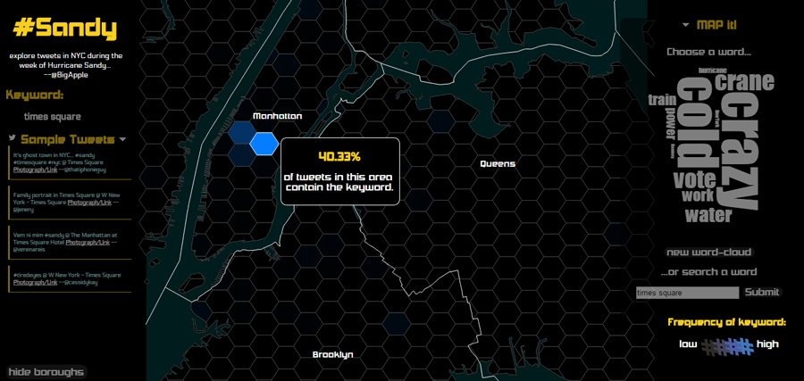

portfolio |
#Sandy |
next |
Collaborative class project to visualize Twitter data in New York City during Hurricane Sandy. This interactive map can be found here. This map won the North American Cartographic Information Society (NACIS) Interactive Map Competition in 2013.
